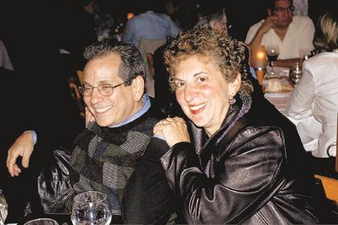

Reprinted from the Observer-Tribune and the Mt. Olive Chronicle.
WASHINGTON TWP. – Nicole Mauro, who graduated in June from West Morris Central High School and Lily Yengle, a June graduate of Mendham High School, were among the recipients of an annual award presented by a Chester dentist and his wife.|  |
| Chester dentist David Goteiner and his wife, Carrie, have been honoring students in the area since 1985. |